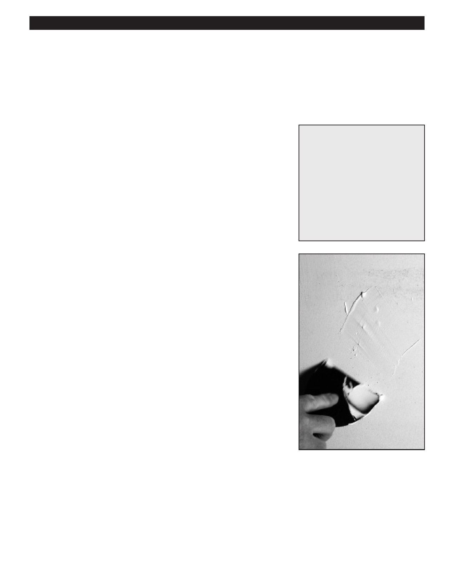

PA RT I C I PA N T R E S O U R C E G U I D E
Ceilings and Walls:
Fixing a Dent or Gouge in Drywall
Small drywall dents and gouges are easy to fix with a spackle knife and wallboard
joint compound.
Safety
Tools and Materials Needed
Wear eye protection, as well as a mask.
Utility knife
Be careful using a utility knife.
Wallboard joint compound
Metal bread pan or hawk (an
aluminum square with a handle
mounted on its underside)
Spackle knife
Fine-grit sandpaper
Primer
Paint
How-to Steps:
1. Trim away loose or frayed paper from the gouge with a utility knife.
2. Place an appropriate quantity of joint compound into a metal bread pan or onto
a hawk.
Note: Joint compound shrinks as it dries. For larger gouges, mesh tape may be
needed so that less layers of joint compound are needed.
3. Pick up a small quantity of compound on the corner of a spackle knife and
spread it over the damaged area.
4. Hold the knife on the wall at a low angle and draw it across the compound
horizontally, then wipe the knife clean on the edge of the pan and make a
second pass vertically.
5. Let the compound dry.
6. Apply a second coat of compound, but this time, use more compound and
extend it a little beyond the first coat.
7. When the patch is dry, sand lightly and apply primer over the repaired surface
before applying a paint topcoat.
Notes:
*Can use spackle for repair in one coat. Wet knife to finish. (can NOT sand) – Faster repair
11